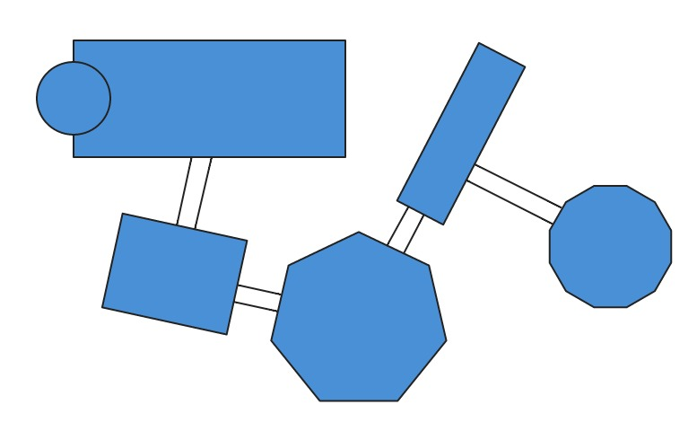
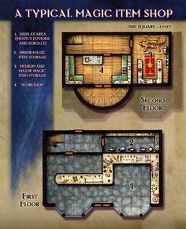

Dungeon generation using vector draw operations, UI will expose tools for generating high level dungeon features such as rooms and corridors, rather than lines and curve primitives.
Example room/corridor layout generated using vector drawing ( http://vectorpaint.yaks.co.nz/)
These examples are used to understand what issues may arise when using vector drawing to generate them.
Example 1 The two floors of this building are made up of multiple rooms. Considering the second floor, you can position separate rooms adjacent to each other to achieve this (not connected by corridors). A typical editing requirement would be to edit the entire floor as a single operation (scale or rotate it), this would be very cumbersome to do separatly to all of the component rooms which make up the floor. To do this as a single transform you would need to be able to multiply select rooms and edit the vector transforms applied to all of them at the same time, if the selected rooms were then rescaled/repositioned they would maintain their adjacency - the floor would scale/rotate as a single object.
Conceptually some of the 'rooms' in these levels are not clearly defined as rooms or corridors, the level creator may consider them all as adjacent rooms. These rooms are irregular linear geometry shapes surrounding one circular tower. As a user you would probably want to start with the outline of the building and partition the rooms up within that outline. Since none of the rooms follow regular geometrical shapes you would not be able to select them directly from a palette, the user would be forced to use some lower-level UI vector concepts in order to generate these levels, which would probably require dragging out a line to draw each individual wall. It may be anyway that the level generator would prefer to think of the generation process for these levels as a sequence of wall placements rather than room placements.
Many dungeon level maps consist of both geometrically shaped rooms and cavernous shaped rooms. Vector geometry is well suited to the former but it could also be used for the latter by applying an 'irregularity' filter, this could just be a noise filter which is applied to each vector wall facing. In terms of UI you could select an area of the dungeon ( or specific rooms or corridors) and apply this filter. This example show how a noise filter can be applied to low resolution vector edges - toggle the 'view' drop-down to 'debug-polygons' see the original polygon shapes.
From the examples given above, the level generator would need to be aware of the concepts of vector geometry (scaling, rotation). This is perhaps a degree of complexity above that required for painting tiles to generate a dungeon layout.
This palette will include the set of regular geometrical shapes, it can also contain sets of pre-generated irregular geometry room shapes. Doing this would allow generation of more elaborate dungeons without the need for providing an interface which requires placing individual wall sections. It would be straight forward for us to provide a varied set of these room outlines. Additionally we could support SVG file format for these rooms so that they can be generated in a SVG package and imported by our editor.
In principle the 2D geometry can be extruded as 3D walls, or it can be used as a guideline for placing rows of pre-generated wall model sections. Rooms and corridors could also be flagged with elevation values, these could be used for generating different tiers within a level layout.
Objects can be selected from a asset library and placed at any point on the level. We would want to connect them to the rooms they are placed in so that when that room is edited they are updated accordingly.
If a level is defined by scalable vector geometry then ideally it would be exported in this format rather than a raw geometry format for example. The runtime would then need to include the same vector engine as the editor to allow it to construct/select the 3D mesh models to use. This could introduce a versioning dependency between the two, raw geometry would not have this dependency but would be a less efficient way to store the level.
A dungeon location is represented as a mathematical graph structure where nodes are rooms and branches are corridors. Each time a room is placed it creates a new mathematical graph instance of a single node, it only gets joined to other graphs when it is connected by a corridor. So the resulting dungeon may be represented by many separate graphs. The purpose of using a graph representation is to keep track of corridor connections between rooms so the rooms can't be edited without losing their corridor connections - it has no navigation significance for example.